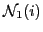
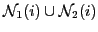
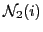

Next: About this document ...
Nikolaos, N M Missirlis
The nine neighbor Extrapolated Diffusion method
Department of Informatics and Telecommunications
University of Athens
Panepistimiopolis 15784
Ilisia
Athens
Greece
nmis@di.uoa.gr
Aikaterini Dimitrakopoulou
The convergence analysis of the Extrapolated Diffusion (EDF) was
developed in [#!Kara04!#] and [#!MarkoMiss10!#]
for the weighted torus and mesh graphs, respectively using the set

of nearest neighbors of a node i in the graph. In the
present work we propose a Diffusion scheme which employs the set

, where

denotes the four neighbors of node i with path length two (see Figure
![[*]](file:/usr/share/latex2html/icons/crossref.png) )
in order to increase the convergence rate. We study the convergence
analysis of the new Diffusion scheme with nine neighbors (NEDF) for
weighted torus graphs. In particular, we find closed form formulae for
the optimum values of the edge weights and the extrapolation parameter. A
60% increase in the convergence rate of NEDF compared to the
conventional EDF method is shown analytically and numerically.
)
in order to increase the convergence rate. We study the convergence
analysis of the new Diffusion scheme with nine neighbors (NEDF) for
weighted torus graphs. In particular, we find closed form formulae for
the optimum values of the edge weights and the extrapolation parameter. A
60% increase in the convergence rate of NEDF compared to the
conventional EDF method is shown analytically and numerically.
root
2012-02-20